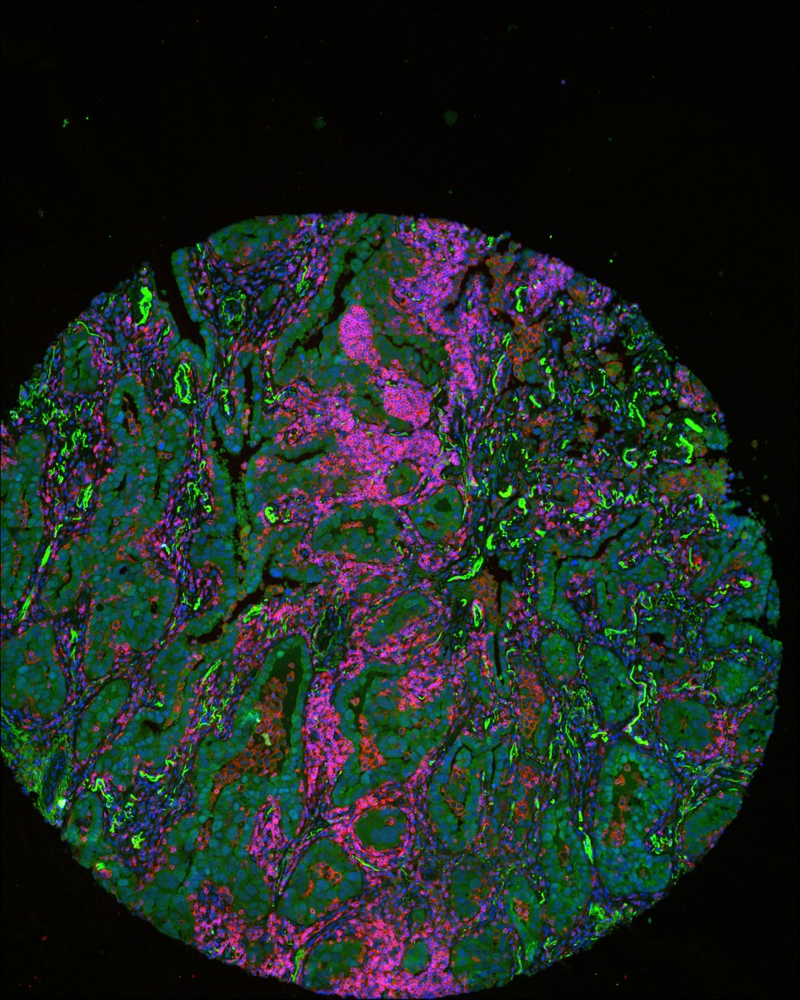

WORKFLOW
01Import done
02Preprocess done
03Stitch in progress
04Segment
05Track
06Results
stage 03 / 067 edges solvednext: segment
cycle-06 · stitched mosaic — 3138 × 2511 px
DAPICD3PanCK+1

z / 0t / 12DAPI 8-bit
1 : 1.8ROI selection
200 µm
x 1,284 · y 942 · z 0
Timelineframe 12 / 240.20 s / frame